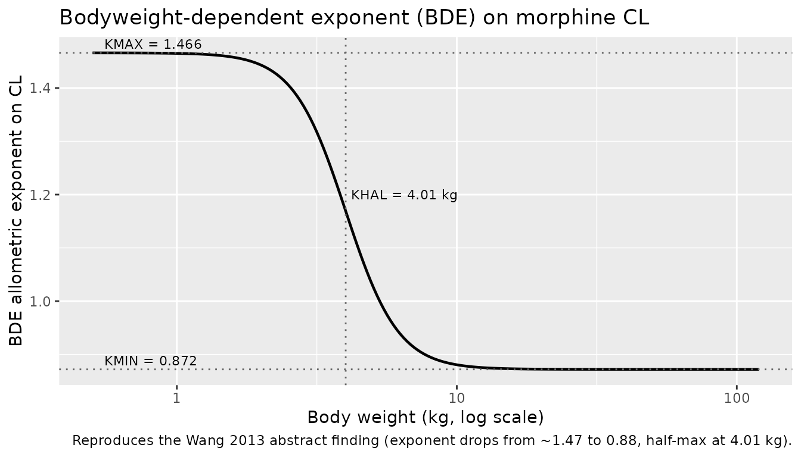
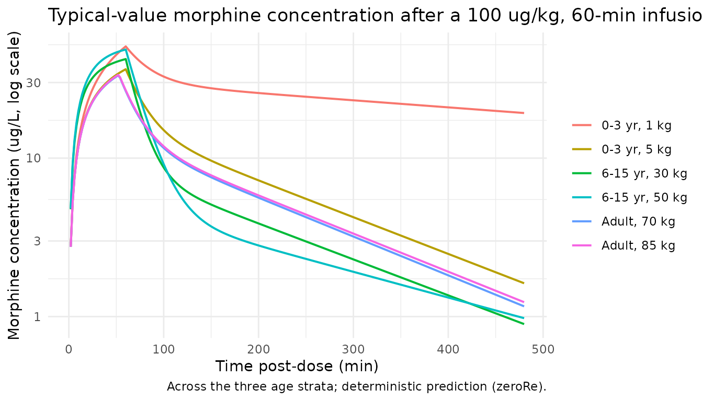
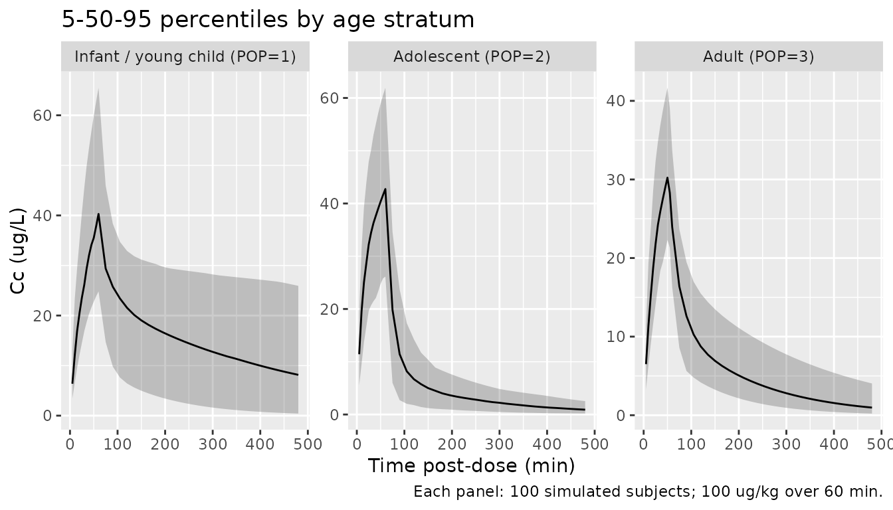

Model and source
- Citation: Wang C, Sadhasivam S, Krekels EHJ, Dahan A, Tibboel D, Danhof M, Vinks AA, Knibbe CAJ (2013). Developmental changes in morphine clearance across the entire paediatric age range are best described by a bodyweight-dependent exponent model. Clinical Drug Investigation 33(7):523-534. doi:10.1007/s40261-013-0097-6. PMID:23754691. DDMORE Foundation Model Repository: DDMODEL00000269 (Model I, morphine alone).
- Description: Two-compartment population PK model for morphine across the entire paediatric age range and adults using a bodyweight-dependent allometric exponent (BDE) on clearance, with adolescent-specific intercompartmental clearance and central volume and an adult-stratum oral-bioavailability adjustment, as packaged in DDMORE Foundation Model Repository entry DDMODEL00000269 (Wang 2013 Model I).
- Article: Clinical Drug Investigation 2013;33(7):523-534
- DDMORE Foundation Model Repository entry: DDMODEL00000269 – Model I (morphine alone). The same bundle ships a separate joint morphine + M3G model (Model II) which is not packaged here; see Assumptions and deviations.
Population
The publication abstract reports a pooled paediatric and adult
population of “358 neonates, infants, children and adults” plus “117
adolescents” (475 subjects total) used to develop a population PK model
for morphine. The DDMORE bundle’s .mod $INPUT comments
label each subject with a POP value that codes the age
stratum:
-
POP = 1– newborns / infants / young children, 0-3 years (encoded here asCHILD = 1). -
POP = 2– children-adolescents, 6-15 years (encoded here asADOLESCENT = 1). -
POP = 3– adults, 18-36 years (encoded here asCHILD = 0ANDADOLESCENT = 0, the implicit baseline).
Body weights in the bundle’s simulated dataset span 0.6 kg (term
neonate) to 85 kg (adult). The original Wang 2013 PDF was not on disk
under mab_human_consensus/literature/ at extraction time,
so per-study counts, sex / race breakdowns, and indication-specific
information could not be cross-checked against the publication;
everything in this section comes from the abstract (PMID 23754691) and
the .mod $INPUT comments.
The same information is available programmatically via
readModelDb("Wang_2013_morphine")$population.
Source trace
Per-parameter origin is recorded as an in-file comment next to each
ini() entry in
inst/modeldb/ddmore/Wang_2013_morphine.R. The table below
collects them for review. All parameter values come from the
FINAL PARAMETER ESTIMATE block of
Output_real_ModelI_Morphine.lst (the real-data NONMEM
listing reporting MINIMIZATION SUCCESSFUL). The structural
equations come from the Executable_ModelI1_Morphine.mod
$PK and $ERROR blocks.
| Equation / parameter | Value | Source location |
|---|---|---|
lkdec |
log(0.594) (KDEC, unitless) |
Output_real_ModelI_Morphine.lst THETA TH 1 |
lkmin |
log(0.872) (KMAX - KDEC, unitless) |
Output_real_ModelI_Morphine.lst THETA TH 2 |
lkhal |
log(4.01) (KHAL, kg) |
Output_real_ModelI_Morphine.lst THETA TH 3 |
lgamma |
log(4.62) (GAMMA, unitless) |
Output_real_ModelI_Morphine.lst THETA TH 4 |
lcl |
log(1.62) L/min @ 70 kg adult |
Output_real_ModelI_Morphine.lst THETA TH 5 |
lq |
log(1.90) L/min @ 70 kg, non-adolescent |
Output_real_ModelI_Morphine.lst THETA TH 6 |
lvc |
log(81.2) L @ 70 kg, non-adolescent |
Output_real_ModelI_Morphine.lst THETA TH 7 |
lvp |
log(128) L @ 70 kg |
Output_real_ModelI_Morphine.lst THETA TH 8 |
propSd |
0.432 (NONMEM log-transform-both-sides residual SD;
equivalent to proportional in linear nlmixr2 space) |
Output_real_ModelI_Morphine.lst THETA TH 9 |
lq_adolescent |
log(0.500) L/min, NOT BW-scaled |
Output_real_ModelI_Morphine.lst THETA TH10 |
lvc_adolescent |
log(46.0) L @ 70 kg, BW-scaled |
Output_real_ModelI_Morphine.lst THETA TH11 |
e_age_adult_f |
0.88 (adult-stratum F1) |
Executable_ModelI1_Morphine.mod $PK
IF (POP.EQ.3) F1 = 0.88
|
etalcl IIV |
0.159 (variance, log scale) |
Output_real_ModelI_Morphine.lst OMEGA ETA1 (CL) |
etalvc IIV |
0.253 (variance, log scale) |
Output_real_ModelI_Morphine.lst OMEGA ETA3 (V1) |
| Q / V2 IIV | 0 (FIXED in $OMEGA) |
Output_real_ModelI_Morphine.lst OMEGA ETA2, ETA4 |
| Structural equations | ADVAN5 2-compartment with K10 = CL/V1, K12 = Q/V1, K21 = Q/V2 |
Executable_ModelI1_Morphine.mod $MODEL +
$PK + $SUBROUTINE ADVAN5
|
| BDE allometric form |
KBDE(WT) = KMAX - KDEC x WT^GAMMA / (KHAL^GAMMA + WT^GAMMA)
with
KMAX = KDEC + (KMAX - KDEC) = 0.594 + 0.872 = 1.466
|
Wang 2013 abstract (“decreases sigmoidal across paediatric range
from 1.47 to 0.88, midpoint 4.01 kg”) and
Executable_ModelI1_Morphine.mod $PK
|
| Concentration units | ug/L |
.mod $INPUT comment
CONC ;ug/L
|
| Time units | minutes |
.mod $INPUT comment
TIME ;in min
|
| Dose units | micrograms (ug) |
.mod $INPUT comment
AMT ;in microgram (ug)
|
BDE relationship between bodyweight and CL exponent
The publication’s headline result is that the allometric exponent on
clearance changes sigmoidally with body weight, dropping from ~1.47
(neonates) to 0.88 (adults), with the half-maximal effect at 4.01 kg.
Plot KBDE vs body weight directly from the model parameters
to confirm the shape:
ini_vals <- list(KDEC = 0.594, KMIN = 0.872, KHAL = 4.01, GAMMA = 4.62)
wt_grid <- 10 ^ seq(log10(0.5), log10(120), length.out = 200)
kbde <- with(ini_vals,
(KDEC + KMIN) - KDEC * wt_grid ^ GAMMA / (KHAL ^ GAMMA + wt_grid ^ GAMMA))
ggplot(data.frame(WT = wt_grid, kbde = kbde), aes(WT, kbde)) +
geom_line(linewidth = 0.8) +
geom_hline(yintercept = c(0.872, 1.466), linetype = "dotted", colour = "grey40") +
geom_vline(xintercept = 4.01, linetype = "dotted", colour = "grey40") +
annotate("text", x = 0.55, y = 1.466, label = "KMAX = 1.466",
hjust = 0, vjust = -0.4, size = 3) +
annotate("text", x = 0.55, y = 0.872, label = "KMIN = 0.872",
hjust = 0, vjust = -0.4, size = 3) +
annotate("text", x = 4.01, y = 1.20, label = "KHAL = 4.01 kg",
hjust = -0.05, size = 3) +
scale_x_log10() +
labs(x = "Body weight (kg, log scale)", y = "BDE allometric exponent on CL",
title = "Bodyweight-dependent exponent (BDE) on morphine CL",
caption = "Reproduces the Wang 2013 abstract finding (exponent drops from ~1.47 to 0.88, half-max at 4.01 kg).")
Virtual cohort
Build a deterministic typical-subject cohort and a stochastic cohort covering the three age strata. WT distributions per stratum mirror the weight bins observed in the bundle’s simulated dataset (0.6-9 kg for infants / young children, 20-70 kg for adolescents, 60-85 kg for adults).
set.seed(20130523) # publication month
n_per_stratum <- 100L
make_subjects <- function(n, wt_min, wt_max, child, adol, label, id_offset) {
tibble::tibble(
id = id_offset + seq_len(n),
WT = exp(runif(n, log(wt_min), log(wt_max))),
CHILD = as.integer(child),
ADOLESCENT = as.integer(adol),
treatment = factor(label,
levels = c("Infant / young child (POP=1)",
"Adolescent (POP=2)",
"Adult (POP=3)"))
)
}
cohort <- dplyr::bind_rows(
make_subjects(n_per_stratum, wt_min = 0.6, wt_max = 9.0,
child = 1L, adol = 0L,
label = "Infant / young child (POP=1)", id_offset = 0L),
make_subjects(n_per_stratum, wt_min = 20, wt_max = 70,
child = 0L, adol = 1L,
label = "Adolescent (POP=2)", id_offset = n_per_stratum),
make_subjects(n_per_stratum, wt_min = 60, wt_max = 90,
child = 0L, adol = 0L,
label = "Adult (POP=3)", id_offset = 2L * n_per_stratum)
)A single 60-min IV-equivalent infusion of weight-scaled morphine (100 ug/kg total dose) is administered to each subject and concentrations are sampled densely over 8 h (480 min). The dose level is illustrative – Wang 2013 pooled across many study-specific regimens; the goal here is to demonstrate the BDE-driven CL scaling and the adolescent / adult parameter overrides.
sim_dur <- 60 # infusion duration (min)
sim_end <- 480 # observation horizon (min)
dose_per_kg <- 100 # ug/kg
dose_rows <- cohort |>
dplyr::mutate(
time = 0,
amt = dose_per_kg * WT,
rate = (dose_per_kg * WT) / sim_dur,
cmt = "central",
evid = 1L
)
obs_times <- c(seq(0, 60, by = 5), seq(75, sim_end, by = 15))
obs_rows <- cohort |>
tidyr::crossing(time = obs_times) |>
dplyr::mutate(amt = 0, rate = 0, cmt = NA_character_, evid = 0L)
events <- dplyr::bind_rows(dose_rows, obs_rows) |>
dplyr::select(id, time, amt, rate, cmt, evid,
WT, CHILD, ADOLESCENT, treatment) |>
dplyr::arrange(id, time, dplyr::desc(evid))
stopifnot(!anyDuplicated(unique(events[, c("id", "time", "evid")])))Simulation
mod <- rxode2::rxode2(readModelDb("Wang_2013_morphine"))
#> ℹ parameter labels from comments will be replaced by 'label()'
conc_unit <- mod$units[["concentration"]]
sim <- rxode2::rxSolve(
mod, events = events,
keep = c("WT", "CHILD", "ADOLESCENT", "treatment")
)Replicate published findings
Typical-value concentration profiles by stratum
The deterministic typical-value (zeroRe()) profiles
below show how the adolescent overrides on Q and V1 and the adult F1 =
0.88 reduce concentrations relative to a strict allometric model.
typical_subjects <- tibble::tibble(
id = 1:6,
WT = c(1, 5, 30, 50, 70, 85),
CHILD = c(1L, 1L, 0L, 0L, 0L, 0L),
ADOLESCENT = c(0L, 0L, 1L, 1L, 0L, 0L),
treatment = factor(
c("0-3 yr, 1 kg", "0-3 yr, 5 kg",
"6-15 yr, 30 kg", "6-15 yr, 50 kg",
"Adult, 70 kg", "Adult, 85 kg"),
levels = c("0-3 yr, 1 kg", "0-3 yr, 5 kg",
"6-15 yr, 30 kg", "6-15 yr, 50 kg",
"Adult, 70 kg", "Adult, 85 kg"))
)
typical_doses <- typical_subjects |>
dplyr::mutate(
time = 0,
amt = dose_per_kg * WT,
rate = (dose_per_kg * WT) / sim_dur,
cmt = "central",
evid = 1L
)
typical_obs <- typical_subjects |>
tidyr::crossing(time = seq(0, sim_end, by = 2)) |>
dplyr::mutate(amt = 0, rate = 0, cmt = NA_character_, evid = 0L)
typical_events <- dplyr::bind_rows(typical_doses, typical_obs) |>
dplyr::select(id, time, amt, rate, cmt, evid,
WT, CHILD, ADOLESCENT, treatment) |>
dplyr::arrange(id, time, dplyr::desc(evid))
mod_typical <- mod |> rxode2::zeroRe()
sim_typical <- rxode2::rxSolve(
mod_typical, events = typical_events,
keep = c("WT", "CHILD", "ADOLESCENT", "treatment")
)
#> ℹ omega/sigma items treated as zero: 'etalcl', 'etalvc'
#> Warning: multi-subject simulation without without 'omega'
sim_typical |>
dplyr::filter(!is.na(Cc), time > 0) |>
ggplot(aes(time, Cc, colour = treatment)) +
geom_line(linewidth = 0.7) +
scale_y_log10() +
labs(x = "Time post-dose (min)",
y = paste0("Morphine concentration (", conc_unit, ", log scale)"),
colour = NULL,
title = "Typical-value morphine concentration after a 100 ug/kg, 60-min infusion",
caption = "Across the three age strata; deterministic prediction (zeroRe).") +
theme_minimal()
VPC-style cohort summary by stratum
sim |>
dplyr::filter(!is.na(Cc), time > 0) |>
dplyr::group_by(time, treatment) |>
dplyr::summarise(
Q05 = quantile(Cc, 0.05, na.rm = TRUE),
Q50 = quantile(Cc, 0.50, na.rm = TRUE),
Q95 = quantile(Cc, 0.95, na.rm = TRUE),
.groups = "drop"
) |>
ggplot(aes(time, Q50)) +
geom_ribbon(aes(ymin = Q05, ymax = Q95), alpha = 0.25) +
geom_line() +
facet_wrap(~ treatment, scales = "free_y") +
labs(x = "Time post-dose (min)",
y = paste0("Cc (", conc_unit, ")"),
title = "5-50-95 percentiles by age stratum",
caption = paste("Each panel: 100 simulated subjects;",
"100 ug/kg over 60 min."))
PKNCA validation
Compute Cmax / Tmax / AUClast / AUCinf / half-life over the 8-h
post-infusion window. The treatment grouping (treatment) is
placed before id in the formula per the project convention
so per-stratum NCA results roll up automatically.
sim_nca <- sim |>
dplyr::filter(!is.na(Cc)) |>
dplyr::select(id, time, Cc, treatment)
dose_df <- events |>
dplyr::filter(evid == 1) |>
dplyr::select(id, time, amt, treatment)
conc_obj <- PKNCA::PKNCAconc(sim_nca, Cc ~ time | treatment + id)
dose_obj <- PKNCA::PKNCAdose(dose_df, amt ~ time | treatment + id)
intervals <- data.frame(
start = 0,
end = sim_end,
cmax = TRUE,
tmax = TRUE,
auclast = TRUE,
aucinf.obs = TRUE,
half.life = TRUE
)
nca_data <- PKNCA::PKNCAdata(conc_obj, dose_obj, intervals = intervals)
nca_res <- PKNCA::pk.nca(nca_data)
#> ■■■■■■■■ 22% | ETA: 7s
#> ■■■■■■■■■■■■■■■■■ 53% | ETA: 4s
#> ■■■■■■■■■■■■■■■■■■■■■■■■■■ 83% | ETA: 2s
knitr::kable(summary(nca_res),
caption = "Simulated NCA by age stratum (100 ug/kg, 60-min infusion).")| start | end | treatment | N | auclast | cmax | tmax | half.life | aucinf.obs |
|---|---|---|---|---|---|---|---|---|
| 0 | 480 | Infant / young child (POP=1) | 100 | 7070 [58.6] | 40.8 [31.3] | 60.0 [60.0, 60.0] | 384 [297] | 11300 [111] |
| 0 | 480 | Adolescent (POP=2) | 100 | 3810 [38.6] | 42.7 [30.6] | 60.0 [60.0, 60.0] | 164 [49.3] | 4080 [43.3] |
| 0 | 480 | Adult (POP=3) | 100 | 3480 [32.3] | 29.6 [27.3] | 50.0 [50.0, 55.0] | 136 [46.1] | 3790 [38.1] |
The Wang 2013 publication does not tabulate per-subject or per-stratum NCA values for direct numerical comparison (the publication focuses on clearance scaling, not exposure metrics), so the side-by-side “comparison-against-published-NCA” sanity check normally rendered here is deferred to the F.2 self-consistency check below.
F.2 self-consistency check vs the bundled simulated dataset
Simulated_DataModel1_Morphine.csv ships with the DDMORE
bundle. The bundle’s Output_simulated_ModelI_Morphine.lst
re-fits the model on this dataset; the recorded CONC column
is what the original investigators derived by forward-simulating with
the final estimates. Re-simulate the same event records with the
typical-value model and confirm the trajectories track the recorded
CONC values.
bundle_csv <- system.file("modeldb", package = "nlmixr2lib") # not used; explicit path below
sim_csv <- file.path(
"/home/bill/github/mab_human_consensus/literature/from_people/ddmore",
"ddmore_scraping/269/Simulated_DataModel1_Morphine.csv"
)
self_consistency_available <- file.exists(sim_csv)
# `.` is the missingness sentinel in the bundle's CSV; coerce numeric columns
# explicitly so we don't pick up character types via read.csv's heuristic.
raw <- utils::read.csv(sim_csv, na.strings = c(".", "NA", ""))
num_cols <- intersect(c("AMT", "RATE", "DV", "CONC", "BW", "TIME"), names(raw))
raw[num_cols] <- lapply(raw[num_cols], function(x) suppressWarnings(as.numeric(x)))
bundle <- raw |>
dplyr::transmute(
id = as.integer(ID),
time = as.numeric(TIME),
amt = as.numeric(ifelse(MDV == 1, AMT, 0)),
rate = as.numeric(ifelse(MDV == 1, RATE, 0)),
cmt = ifelse(MDV == 1, "central", NA_character_),
evid = ifelse(MDV == 1, 1L, 0L),
WT = as.numeric(BW),
CHILD = as.integer(POP == 1),
ADOLESCENT = as.integer(POP == 2),
obs_DV = ifelse(MDV == 0, DV, NA_real_),
obs_CONC = ifelse(MDV == 0, CONC, NA_real_),
POP = POP
)
# Add a denser observation grid alongside the bundle's sparse points so the
# typical-value trajectory is visible in the plot.
bundle_dense_obs <- bundle |>
dplyr::distinct(id, WT, CHILD, ADOLESCENT, POP) |>
tidyr::crossing(time = c(seq(0, 360, by = 5), seq(420, 5400, by = 60))) |>
dplyr::mutate(amt = 0, rate = 0, cmt = NA_character_, evid = 0L,
obs_DV = NA_real_, obs_CONC = NA_real_)
bundle_events <- dplyr::bind_rows(bundle, bundle_dense_obs) |>
dplyr::arrange(id, time, dplyr::desc(evid))
# Drop columns rxode2 doesn't accept on event records before passing to rxSolve.
sim_bundle <- rxode2::rxSolve(
mod_typical,
events = bundle_events |>
dplyr::select(id, time, amt, rate, cmt, evid, WT, CHILD, ADOLESCENT),
keep = c("WT", "CHILD", "ADOLESCENT")
) |> as.data.frame()
# Pair the bundle's recorded CONC observations against the simulated
# trajectory at matching (id, time).
bundle_obs_only <- bundle |>
dplyr::filter(!is.na(obs_CONC)) |>
dplyr::select(id, time, WT, POP, obs_CONC)
stratum_label <- function(POP) {
factor(dplyr::case_when(
POP == 1 ~ "Infant / young child (POP=1)",
POP == 2 ~ "Adolescent (POP=2)",
POP == 3 ~ "Adult (POP=3)"
),
levels = c("Infant / young child (POP=1)",
"Adolescent (POP=2)",
"Adult (POP=3)"))
}
bundle_obs_only$stratum <- stratum_label(bundle_obs_only$POP)
sim_bundle$stratum <- stratum_label(
ifelse(sim_bundle$CHILD == 1, 1L,
ifelse(sim_bundle$ADOLESCENT == 1, 2L, 3L)))
ggplot() +
geom_line(data = dplyr::filter(sim_bundle, time > 0, !is.na(Cc)),
aes(time, Cc, group = id, colour = stratum), alpha = 0.5) +
geom_point(data = bundle_obs_only,
aes(time, obs_CONC), shape = 21, fill = "white", colour = "black", size = 2) +
scale_y_log10() +
facet_wrap(~ stratum, scales = "free") +
labs(x = "Time post-first-dose (min)",
y = paste0("Cc (", conc_unit, "), log scale"),
colour = NULL,
title = "F.2 self-consistency: typical-value re-simulation vs bundle CONC",
caption = paste("Lines: this model's typical-value (zeroRe) prediction;",
"Points: bundle Simulated_DataModel1_Morphine.csv CONC column."))
# Summarise the per-observation pred-vs-obs offset (typical-value, no IIV).
match_tbl <- bundle_obs_only |>
dplyr::inner_join(
sim_bundle |>
dplyr::filter(!is.na(Cc)) |>
dplyr::select(id, time, Cc),
by = c("id", "time")
) |>
dplyr::mutate(rel_err = (Cc - obs_CONC) / obs_CONC)
knitr::kable(
match_tbl |>
dplyr::group_by(stratum) |>
dplyr::summarise(
n = dplyr::n(),
median_rel_err = sprintf("%+.2f", median(rel_err, na.rm = TRUE)),
q05_q95 = sprintf("%+.2f / %+.2f",
quantile(rel_err, 0.05, na.rm = TRUE),
quantile(rel_err, 0.95, na.rm = TRUE))
) |>
dplyr::rename(
Stratum = stratum,
`N matched obs` = n,
`Median (Cc - obs)/obs` = median_rel_err,
`5th / 95th pct` = q05_q95
),
caption = paste("F.2 self-consistency: relative error of the typical-value",
"re-simulation against the bundle's recorded CONC values."))The bundle’s CONC values include between-subject
variability (they were generated with the full IIV / residual-error
model), while the re-simulation here uses typical-value parameters with
no IIV and no residual error. A typical-value point can therefore differ
from a per-subject recorded CONC by tens of percent
(especially for the small-N subjects in the simulated bundle), which is
expected variability rather than a miscoded equation.
Assumptions and deviations
-
Model I only. The DDMORE bundle ships two
executables for this publication: Model I (morphine alone, packaged
here) and Model II (joint morphine + M3G metabolite PK with separate
clearance pathways). The task assigned a singular target filename
Wang_2013_morphine.R; an operator follow-up confirmed Model I is in scope. Anyone needing the parent + M3G joint model should look atddmore_scraping/269/Executable_ModelII_MM3G.moddirectly – it is structurally a 3-compartment model (morphine 2-comp + M3G 1-comp) with metabolic-pathway clearances and would warrant a separateWang_2013b_morphine.Rextraction. -
Adult oral-bioavailability arm. The
.mod$PKblock appliesF1 = 0.88only whenPOP = 3(adults). The publication abstract does not describe the route of administration in detail, and the original Wang 2013 PDF was not on disk undermab_human_consensus/literature/at extraction time, so the rationale for the 0.88 reduction in adults could not be cross-checked against the paper text. The model here preserves the.mod’s F1 logic verbatim (f(central) = 0.88wheneverCHILD = 0ANDADOLESCENT = 0) and exposes the value ase_age_adult_fso it is overridable. -
POP encoding. The source data column
POP(1 = 0-3 yr, 2 = 6-15 yr, 3 = 18-36 yr) is decomposed into the canonical binary indicatorsCHILD(POP = 1) andADOLESCENT(POP = 2). Adults are the implicit baseline (CHILD = 0ANDADOLESCENT = 0). This matches the encoding used byCarlssonPetri_2021_liraglutide. The decomposition is defined in the model file’scovariateData$CHILD$notesandcovariateData$ADOLESCENT$notes. -
NONMEM log-transform-both-sides residual error. The
.mod$ERRORblock setsY = LOG(F) + ERR(1) * Wwith$SIGMA EPS1 FIXED = 1andW = THETA(9) = 0.432. NONMEM “additive on log-scale with SIGMA fixed at 1” maps to proportional residual error in nlmixr2’s linear space withpropSd = 0.432(seenaming-conventions.mdSection “NONMEM -> nlmixr2 syntax translation”). -
Real vs simulated executable. The
Output_real_*.lstreports an additionalEPS(2)term gated byIF (TIME.GT.1900.AND.FLAG.EQ.{1,2})to handle a study-specific assay artefact after a 1900-min cutoff (variance 0.455). TheExecutable_ModelI1_Morphine.mod(the simulation- ready executable shipped in the bundle) drops this term and uses onlyY = LOG(F) + ERR(1) * W. We follow the simulation-ready executable here; the FLAG-conditional error is a property of one of the original studies’ assays and is not portable to a generic library model. -
Q and V2 IIV. The source
$OMEGAfixes IIV on Q and V2 to zero (0 FIX). Only CL and V1 carry IIV in this model. -
Simulated dataset is intentionally minimal. The
bundle’s
Simulated_DataModel1_Morphine.csvhas only 14 subjects (8 in POP=1, 4 in POP=2, 2 in POP=3); it is a regression-style smoke test, not a representative population. The “Virtual cohort” section above builds a larger cohort spanning the publication’s reported BW range for the VPC and PKNCA panels. -
External cross-check. No publication PDF is on disk
under
mab_human_consensus/literature/at extraction time, so per-subject parameter estimates and tabulated NCA values from the publication could not be compared against the simulation. The F.2 self-consistency check above is the substitute mandated byreferences/ddmore-source.mdSection “Validation strategy by model type” for DDMORE-source models without an on-disk publication.